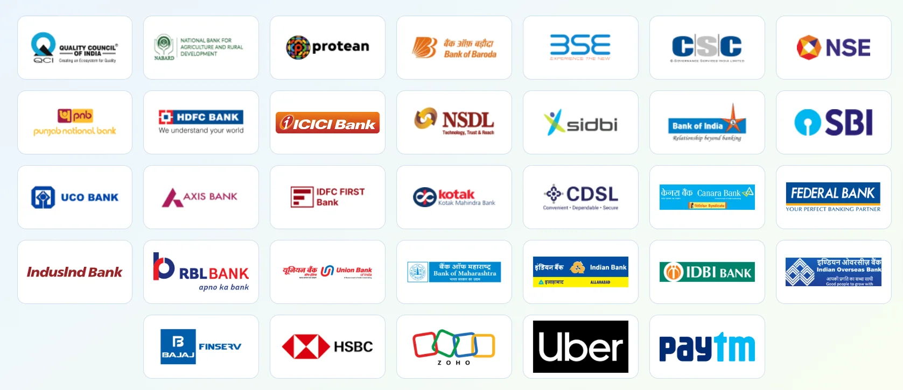

One order became a network
A bunch of coriander delivered in Bengaluru was the first transaction on ONDC. Scroll to watch the network spread across India.
-
2021
The idea-
An advisory council is established by DPIIT to shape an open network for digital commerce.
-
ONDC is registered as a Section 8 company, and the first cohort completes an end-to-end test transaction.
-
-
2022
The first order-
The first ONDC order
A handful of dhaniya, delivered in Bengaluru. Everything since started here.
-
The NABARD Grand Hackathon powers innovators to build solutions for kisaan and karigar.
-
Food & beverages launches in Bengaluru.
-
The first social enterprises join the network, supported by SIDBI.
-
The first standalone logistics transaction runs on the network.
-
-
2023
Opening up-
Ride-hailing starts on the ONDC Network.
-
Farmer-producer organisations start joining e-commerce with ONDC, supported by the Ministry of Agriculture.
-
1M+
transactions completed on the network.
-
Food & beverages crosses 100K+ monthly orders.
-
Central Cottage Emporium becomes the first aggregator on the network.
-
10M+
transactions, three months after the first million.
-
The first exclusive ONDC logistics service launches as Ola goes live on the network.
-
-
2024
Scale-
The first metro goes live — Chennai Metro joins ONDC.
-
The first mutual fund transaction is completed.
-
The MSME TEAM Programme launches to bring 500K MSMEs onto digital commerce.
-
Six-minute paperless loans become a reality through ONDC.
-
100M+
transactions across every sector on the network.
-
The first bus service goes live — DTC joins ONDC.
-
-
2025
Momentum-
Delhi Metro goes live, bookable across 10+ apps.
-
250M+
transactions — the network doubles in ten months.
-
200 experiences in Varanasi are digitised for the first time.
-
Eight small logistics providers are digitised for the first time through ONDC FleetConnect.
-
Uber Direct goes live on ONDC.
-
-
2026
Everyday infrastructure-
An India Post warehouse delivers its first ONDC order.
-
13K+ retailers join DigiDukaan across Hyderabad and Jaipur.
-
Single booking across all three lines of the Mumbai Metro is enabled for the first time.
-
375K+ daily metro and bus tickets are booked across 35+ apps, and ASI monuments become bookable on ONDC.
-
50+ logistics partners are live, including 30+ small fleet operators. Airxy's women-led delivery fleet grows 7× month on month.
-
₹3.75B disbursed in credit and ₹1.92B invested through 1M+ transactions, with 29 AMCs live.
-
Five years. Thousands of partners. Millions of opportunities. And we are just getting started.
Powering the future of digital commerce
ONDC is an initiative by the Government of India's Department for Promotion of Industry and Internal Trade (DPIIT) designed as population-scale digital infrastructure. ONDC is enabling broader participation across Retail, Logistics, MTT (Mobility, Transit and Travel), and Financial services.
Built on open-network principles, ONDC is creating interoperable digital rails that aim to solve category level problems that remain unresolved currently by digitizing the un-digitized, reducing fragmentation, increasing efficiency, and unlock access for businesses, consumers, gig workers, and small producers across India.
One of the world's fastest-growing digital economies, with room to include many more
A significant share of commerce in India still operates outside organised digital systems. ONDC's open network architecture turns those structural gaps into opportunities.
Barriers that keep millions of sellers disconnected from digital commerce.
An open network that opens doors across the ecosystem.
Backed by India's leading institutions
ONDC was incorporated as a Section 8 company in December 2021, with the Quality Council of India and Protean eGov Technologies Limited as Founding Members.
National body for quality assurance, and a founding shareholder of ONDC since its incorporation in December 2021.
Long-standing builder of India's digital public infrastructure, and a founding shareholder of ONDC.

Board of Directors
ONDC is guided by a Board drawn from India's founding institutions, shareholder organisations and independent industry leadership.


Recognised across India's digital economy
ONDC's work on open digital commerce infrastructure has been recognised by industry bodies, media and government forums.